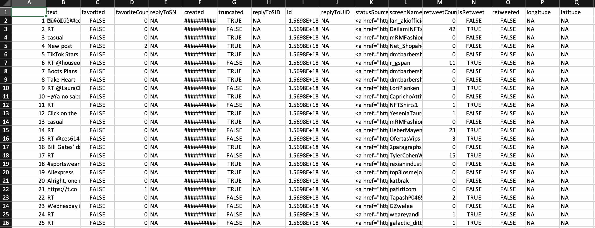
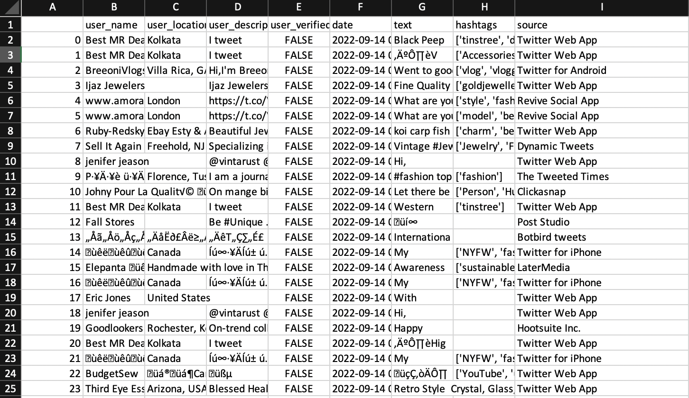
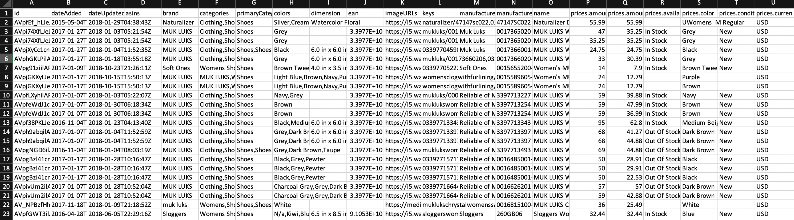

Data Gathering
What is Data Gathering?
Data collection is the systematic process of gathering and measuring information on variables of interest in order to answer stated research questions, test hypotheses, and evaluate outcomes. Data collection is a component of research that is shared by all fields of study, including physical and social sciences, humanities, business, and so on. While methods differ depending on the discipline, the emphasis on ensuring accurate and honest collection remains constant.
Knowledge is power, information is information, and data is information in digitized form, at least as defined in information technology. As a result, data is power. However, before you can turn that data into a successful strategy for your organization or business, you must first collect it. That is the first step.
Our society is heavily reliant on data, emphasizing the significance of data collection. To make informed business decisions, ensure quality assurance, and maintain research integrity, accurate data collection is required. During data collection, researchers must identify data types, data sources, and data collection methods. We will soon discover that there are numerous data collection methods. There is heavy reliance on data collection in research, commercial, and government fields.

About the Data
Text Data:
Twitter's Developer Platform enables you to harness the power of Twitter's open, global, real-time, and historical platform within your applications. The platform provides tools, resources, data, and API products for you to integrate, and expand Twitter's impact through research, solutions, and more. The Twitter API enables programmatic access to Twitter in unique and advanced ways. Tap into core elements of Twitter like Tweets, Direct Messages, Spaces, Lists, users, and more. Twitter API gives you real-time access to the global conversation, right at your fingertips. Using the Twitter API, I collected Tweets relating to fashiontrends and ecommerce in R and Python. The data consists of the text in the tweet, tweet favorite count, tweet date, id number, Twitter account, and retweet count. I chose these hashtags since they were my project is based on e-commerce data on the latest fashion trends in the world.
 Record Data:
Record Data:
The data was web scraped from APIFY to collect data from the official websites of Macy's, Amazon, and Walmart for Data Analysis.
Macy's Data: Macy's Scraper will enable you to get data from Macy's website than the official Macy's API. The API uses Macy's web scraper to crawl product information including price and sale price, color, and images. And then extracts all data in a dataset in structured formats like HTML, JSON, CSV, Excel, XML, or RSS. Macy's website has an average of 100 million visits per month and is a great source of data for the fashion industry.
Amazon's Data: Apify Store is packed with dozens of readymade tools for scraping and automation. One of the most popular scraping tools is Amazon Product Scraper, which allows you to extract data from Amazon automatically. This tool effectively creates an Amazon scraper API that enables you to get the data you need. Amazon Product Scraper is a web scraping tool that enables you to extract product data from Amazon by using Amazon's subcategory URLs or product URLs. The Amazon scraper collects data based on URL and country from the Amazon website and extracts product information without using the Amazon API, including reviews, prices, descriptions, and Amazon Standard Identification Numbers (ASINs). The data can be downloaded in various structured formats.
Walmart Apparel: Apify can scrape millions of product data from Walmart. The web scrapper crawls and extracts descriptions, images, brand details, prices, variations and all other product details. You can specify search terms, filters, categories, list pages and much more. The Walmart data scraper supports scraping product details like images, seller information, photos, brands, variants, ID of the product and many more.
| Snippet of Dataset |
Description |
| 
View
Download csv file
|
R API
The Twitter API is used to extract tweets on the hashtag fashion. The motive behind this is to understand the opinion of people regarding fashion trends.
*The photo attached is the partial snippet of the dataframe. Click on View button to look at all the columns.
R code
|
| 
View
Download csv file
|
Python API
The Twitter API tweepy is used to extract tweets on the hashtag fashion. The motive behind this is to understand the opinion of people regarding fashion trends. Since the json file is messy, I have converted it into csv and uploaded it. I can send the json file if needed.
Python code
|
| 
View
|
Raw Data
Macy's Women's Apparel: Download csv file
Macy's Men's Apparel: Download csv file
Amazon's Women's Dresses: Download csv file
Amazon's Men's Shirts: Download csv file
Amazon's Women's Coats: Download csv file
Amazon's Men's Coats: Download csv file
Walmart Apparel: Download csv file
|